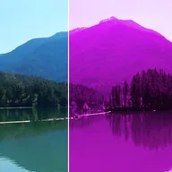

Inkleuren

Kleurt de hele laag in één kleurtoon. Licht en schaduw zet de helderheid van de laag om naar de kleurtoon; Helderheid behouden houdt de helderheid van elke pixel en wisselt de kleur voor die van de kleurtoon.
Instellingen
| Instelling | Type | Bereik | Standaard |
|---|---|---|---|
| Kleurtoon | Hoek | -360° tot 360° | 0° |
| Hoeveelheid | Getal | 0% tot 100% | 50% |
| Stijl | Keuze | Licht en schaduw, Helderheid behouden | Licht en schaduw |